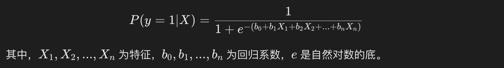

6. Sklearn 机器学习模型原文↗
机器学习模型是实现自动化数据分析、模式识别和预测的核心工具。
根据任务类型的不同，机器学习模型通常可以分为：
- 分类模型（Classification）：预测离散类别
- 回归模型（Regression）：预测连续数值
- 聚类模型（Clustering）：对数据进行自动分组
本章节将详细介绍这些常见的机器学习模型，并介绍如何评估和优化模型。
1、分类模型
分类问题是机器学习中最常见的问题之一，其目的是将输入数据映射到离散的类别标签。
常见分类模型包括：
- 逻辑回归
- K-近邻（KNN）
- 支持向量机（SVM）
- 决策树
- 随机森林
逻辑回归（Logistic Regression）
逻辑回归虽然名字中带"回归"，但本质是概率型分类模型，常用于二分类问题。
其核心思想是：
- 先进行线性加权求和
- 再通过 Sigmoid 函数将结果映射到 0~1 之间作为概率
形式可表示为：
逻辑回归的核心公式为：

scikit-learn 实现:
实例
from sklearn.linear_model import LogisticRegressionfrom sklearn.model_selection import train_test_split
# 假设 X 是特征矩阵，y 是标签
X_train, X_test, y_train, y_test = train_test_split(X, y, test_size=0.3, random_state=42)
model = LogisticRegression()
model.fit(X_train, y_train)
# 预测
y_pred = model.predict(X_test)
K-近邻（K-Nearest Neighbors, KNN）
K-近邻（KNN）是一种基于实例的学习方法，预测时通过计算待预测样本与训练集中所有样本的距离，选取距离最近的 K 个邻居，并根据邻居的标签进行预测。
主要参数:
- K：选择的邻居数量。
- 距离度量：常用欧氏距离，也可以使用曼哈顿距离、闵可夫斯基距离等。
scikit-learn 实现:
实例
from sklearn.neighbors import KNeighborsClassifierfrom sklearn.model_selection import train_test_split
# 假设 X 是特征矩阵，y 是标签
X_train, X_test, y_train, y_test = train_test_split(X, y, test_size=0.3, random_state=42)
model = KNeighborsClassifier(n_neighbors=3)
model.fit(X_train, y_train)
# 预测
y_pred = model.predict(X_test)
支持向量机（Support Vector Machine, SVM）
支持向量机是一种强大的分类模型，尤其适用于高维数据。
SVM 的基本思想是找到一个超平面，使得不同类别的样本点之间的间隔最大化。对于非线性可分的数据，SVM 通过核技巧将数据映射到高维空间，找到一个分隔超平面。
核函数:
- 线性核：适用于线性可分的数据。
- 高斯径向基核（RBF）：适用于非线性数据。
- 多项式核：适用于具有多项式关系的数据。
scikit-learn 实现:
实例
from sklearn.svm import SVCfrom sklearn.model_selection import train_test_split
# 假设 X 是特征矩阵，y 是标签
X_train, X_test, y_train, y_test = train_test_split(X, y, test_size=0.3, random_state=42)
model = SVC(kernel='linear') # 使用线性核
model.fit(X_train, y_train)
# 预测
y_pred = model.predict(X_test)
决策树与随机森林（Decision Tree & Random Forest）
决策树是一种树形结构的分类模型，通过对数据进行分裂，最终将数据划分到不同的类别。随机森林则是通过构建多棵决策树，并通过投票或平均来决定最终的预测结果。
决策树通过选择最优的特征进行数据划分，选择准则通常是 信息增益 或 基尼系数。
随机森林通过多棵决策树的集成来减少过拟合，并提高模型的准确性。它通过引入随机性（如随机选择特征、随机选择数据子集）来增加模型的多样性。
scikit-learn 实现:
实例
from sklearn.tree import DecisionTreeClassifierfrom sklearn.ensemble import RandomForestClassifier
from sklearn.model_selection import train_test_split
# 假设 X 是特征矩阵，y 是标签
X_train, X_test, y_train, y_test = train_test_split(X, y, test_size=0.3, random_state=42)
# 决策树
dt_model = DecisionTreeClassifier()
dt_model.fit(X_train, y_train)
# 随机森林
rf_model = RandomForestClassifier(n_estimators=100)
rf_model.fit(X_train, y_train)
# 预测
dt_pred = dt_model.predict(X_test)
rf_pred = rf_model.predict(X_test)
2、回归模型
回归问题的目标是预测一个连续的输出变量。常见的回归模型包括线性回归、岭回归和 Lasso 回归。
线性回归（Linear Regression）
线性回归通过拟合一条直线来预测目标变量。其核心假设是特征与目标变量之间存在线性关系。
对于一个简单的线性回归问题，模型可以表示为：
- y 是预测值（目标值）。
- x1，x2，xn 是输入特征。
- w1，w2，wn是待学习的权重（模型参数）。
- b 是偏置项。

scikit-learn 实现:
实例
from sklearn.linear_model import LinearRegressionfrom sklearn.model_selection import train_test_split
# 假设 X 是特征矩阵，y 是目标变量
X_train, X_test, y_train, y_test = train_test_split(X, y, test_size=0.3, random_state=42)
model = LinearRegression()
model.fit(X_train, y_train)
# 预测
y_pred = model.predict(X_test)
岭回归（Ridge Regression）
岭回归是线性回归的一个变种，使用 L2 正则化 来约束模型的复杂度，避免过拟合。通过惩罚回归系数的大小，岭回归能更好地处理多重共线性问题。
scikit-learn 实现:
实例
from sklearn.linear_model import Ridgemodel = Ridge(alpha=1.0) # alpha 是正则化参数
model.fit(X_train, y_train)
# 预测
y_pred = model.predict(X_test)
Lasso 回归（Lasso Regression）
Lasso 回归也是线性回归的一种形式，它使用 L1 正则化 来对回归系数进行惩罚。与岭回归不同，Lasso 会将一些回归系数压缩到零，从而实现特征选择。
scikit-learn 实现:
实例
from sklearn.linear_model import Lassomodel = Lasso(alpha=0.1) # alpha 是正则化参数
model.fit(X_train, y_train)
# 预测
y_pred = model.predict(X_test)
3、聚类模型
聚类是一种无监督学习方法，其目标是将数据集中的对象分为不同的组（或簇），使得同一簇中的对象尽可能相似，而不同簇之间的对象尽可能不同。
K-均值（K-Means）
K-均值是一种常见的聚类算法，目标是将数据分为 K 个簇，通过最小化每个数据点与其簇中心的距离来优化簇划分。
scikit-learn 实现:
实例
from sklearn.cluster import KMeans# 假设 X 是特征矩阵
model = KMeans(n_clusters=3)
model.fit(X)
# 获取聚类标签
labels = model.predict(X)
DBSCAN（密度聚类）
DBSCAN（Density-Based Spatial Clustering of Applications with Noise）是一种基于密度的聚类算法，它通过寻找密度相对较高的区域来进行聚类，不需要事先指定簇的数量。
scikit-learn 实现:
实例
from sklearn.cluster import DBSCAN# 假设 X 是特征矩阵
model = DBSCAN(eps=0.5, min_samples=5)
model.fit(X)
# 获取聚类标签
labels = model.labels_
层次聚类（Hierarchical Clustering）
层次聚类是一种通过递归地合并或分割簇的方式进行聚类的方法。常用的层次聚类方法有 凝聚型聚类（Agglomerative）和 分裂型聚类（Divisive）。
scikit-learn 实现:
实例
from sklearn.cluster import AgglomerativeClustering# 假设 X 是特征矩阵
model = AgglomerativeClustering(n_clusters=3)
labels = model.fit_predict(X)
4、模型评估与选择
在机器学习中，模型训练完成后，需要通过合理的评估方法来判断模型的泛化能力，并选择性能最优的模型。
常见评估方式包括：
- 分类指标评估
- 交叉验证
- 超参数调优
分类评估指标
在分类问题中，常用的评价指标包括：
- 准确率（Accuracy）
- 精确率（Precision）
- 召回率（Recall）
- F1 分数（F1 Score）
它们从不同角度反映模型性能。
各指标含义说明：
准确率（Accuracy） -- 所有样本中预测正确的比例：适合类别分布较均衡的情况
-
精确率（Precision） -- 预测为正类的样本中，真正为正的比例：关注"预测为正是否靠谱"
-
召回率（Recall） -- 所有实际为正类的样本中，被模型正确识别出来的比例：关注"正样本是否被漏掉"
F1 分数
Precision 与 Recall 的调和平均值：
用于在精确率和召回率之间取得平衡。
scikit-learn 实现:
实例
from sklearn.metrics import accuracy_score, precision_score, recall_score, f1_scoreaccuracy = accuracy_score(y_test, y_pred)
precision = precision_score(y_test, y_pred)
recall = recall_score(y_test, y_pred)
f1 = f1_score(y_test, y_pred)
print(f"Accuracy: {accuracy}")
print(f"Precision: {precision}")
print(f"Recall: {recall}")
print(f"F1 Score: {f1}")
留出法评估（训练集 / 测试集划分）
最常见、最直观的评估方式是将数据集划分为：
- 训练集：用于模型学习
- 测试集：用于性能评估
该方法简单高效，适合入门阶段理解模型效果。
交叉验证（Cross Validation）
交叉验证通过多次划分数据集进行训练与测试，从而获得更加稳定、可靠的模型性能评估结果。
常见做法是 K 折交叉验证：
- 数据集被划分为 K 份
- 每次用其中一份作为验证集
- 其余作为训练集
- 重复 K 次取平均结果
实例
from sklearn.model_selection import cross_val_scorefrom sklearn.linear_model import LogisticRegression
model = LogisticRegression()
scores = cross_val_score(model, X, y, cv=5)
print("Cross-validation scores:", scores)
print("Mean score:", scores.mean())
实际项目中通常要么使用留出法，要么使用交叉验证，不需要同时混用。
网格搜索调参（GridSearchCV）
模型性能往往受到超参数设置影响较大。
网格搜索通过遍历参数组合，自动寻找最优配置。
同时结合交叉验证，使调参结果更加稳健。
实例
from sklearn.model_selection import GridSearchCVfrom sklearn.svm import SVC
parameters = {
'kernel': ['linear', 'rbf'],
'C': [1, 10, 100]
}
model = SVC()
grid_search = GridSearchCV(
model,
parameters,
cv=5
)
grid_search.fit(X, y)
print("Best parameters:", grid_search.best_params_)
print("Best score:", grid_search.best_score_)